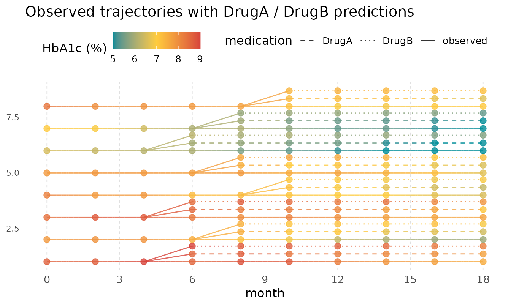
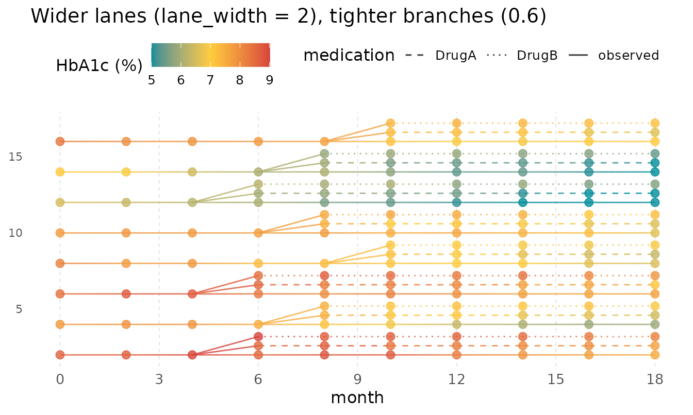
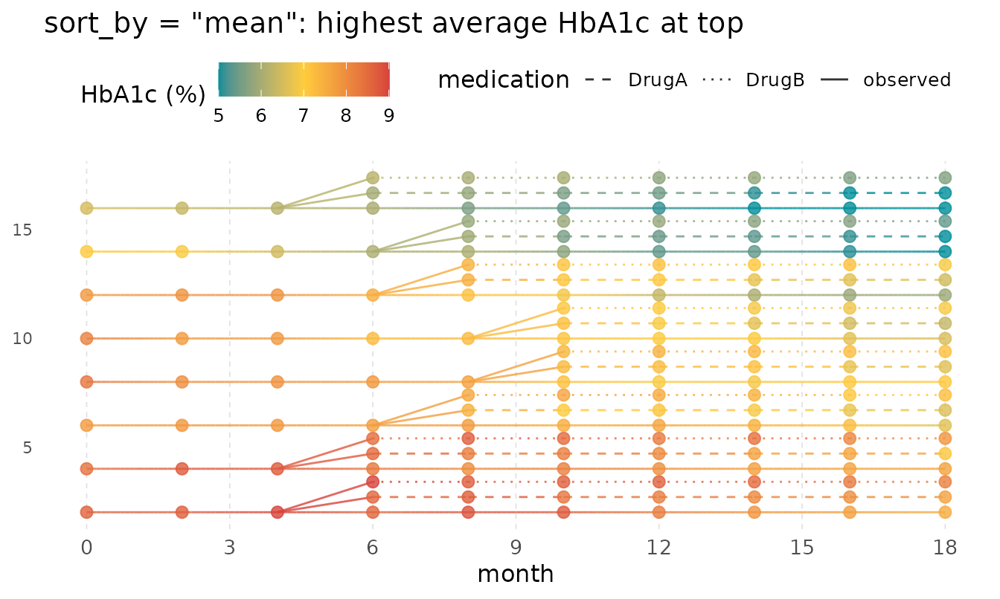
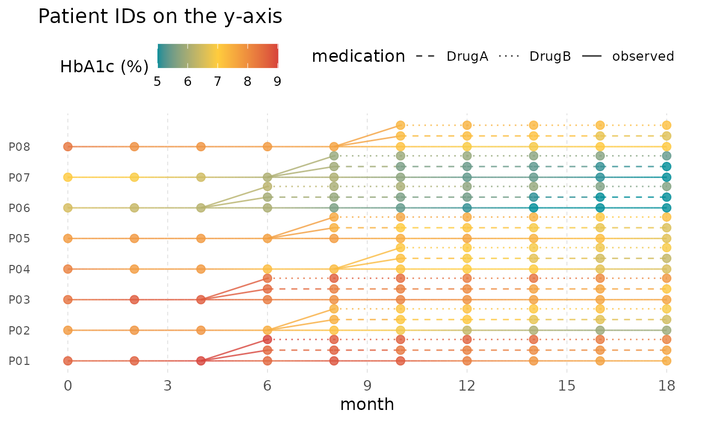
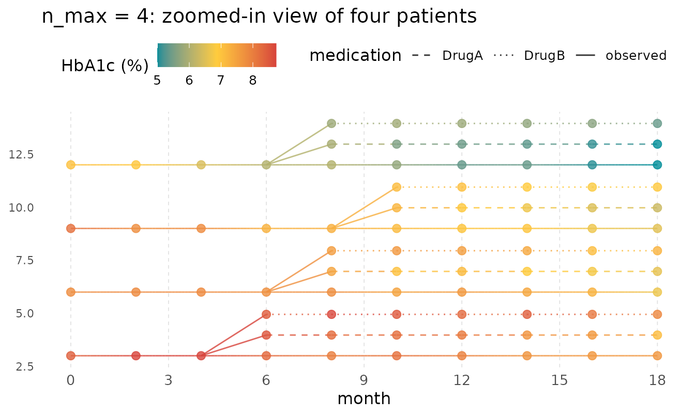

Counterfactual Trajectories with geom_kodom_branch
kodom-branch.Rmdgeom_kodom_branch() extends the swimlane layout with
counterfactual prediction arms. Each subject has one
observed trajectory (solid line) and one dashed sub-lane per medication
or intervention arm, stacked vertically within the subject’s primary
lane. The branch point can differ across subjects — just supply
NA in the medication aesthetic for every
pre-branch and post-branch observed row, and a non-NA arm label for
every predicted row.
Sample data
The dataset simulates 8 patients from a diabetes trial. Each patient
has pre-randomisation HbA1c readings (observed,
medication = NA), a continued post-randomisation observed
path, and model-predicted trajectories under two drug arms
("DrugA" and "DrugB"). Branch (randomisation)
timing differs across patients.
set.seed(21)
n_patients <- 8L
branch_times <- c(4, 6, 4, 8, 6, 4, 6, 8) # month of randomisation
horizon <- 18L # last prediction month
make_patient <- function(i) {
t_branch <- branch_times[i]
base <- rnorm(1, mean = 8.0, sd = 0.8)
# Pre-branch observed visits (every 2 months, including month 0)
t_pre <- seq(0, t_branch, by = 2)
v_pre <- base + cumsum(c(0, rnorm(length(t_pre) - 1L, -0.1, 0.25)))
# Post-branch observed (patient actually received DrugA)
t_post <- seq(t_branch + 2, horizon, by = 2)
v_post <- tail(v_pre, 1L) + cumsum(rnorm(length(t_post), -0.18, 0.2))
# Predictions under DrugA (steeper decline)
v_a <- tail(v_pre, 1L) + cumsum(rep(-0.20, length(t_post))) +
rnorm(length(t_post), 0, 0.1)
# Predictions under DrugB (milder decline)
v_b <- tail(v_pre, 1L) + cumsum(rep(-0.10, length(t_post))) +
rnorm(length(t_post), 0, 0.1)
rbind(
data.frame(
subject_id = sprintf("P%02d", i),
month = t_pre,
hba1c = pmax(5, v_pre),
medication = NA_character_,
stringsAsFactors = FALSE
),
data.frame(
subject_id = sprintf("P%02d", i),
month = t_post,
hba1c = pmax(5, v_post),
medication = NA_character_,
stringsAsFactors = FALSE
),
data.frame(
subject_id = sprintf("P%02d", i),
month = t_post,
hba1c = pmax(5, v_a),
medication = "DrugA",
stringsAsFactors = FALSE
),
data.frame(
subject_id = sprintf("P%02d", i),
month = t_post,
hba1c = pmax(5, v_b),
medication = "DrugB",
stringsAsFactors = FALSE
)
)
}
trial_df <- do.call(rbind, lapply(seq_len(n_patients), make_patient))1. Basic usage
Map x to time, id to subject,
colour to the measurement, and medication to
the arm column. Observed rows (medication = NA) are
automatically labelled "observed" in the stat output, so
scale_linetype_manual() can target all three track types by
name. A short vertical fork connector is drawn at each subject’s branch
point.
ggplot(
trial_df,
aes(
x = month,
id = subject_id,
colour = hba1c,
linetype = medication,
medication = medication
)
) +
geom_kodom_branch() +
scale_x_continuous(breaks = seq(0, 18, by = 3)) +
scale_linetype_manual(
values = c("observed" = "solid", "DrugA" = "dashed", "DrugB" = "dotted")
) +
scale_colour_kodom(name = "HbA1c (%)") +
theme_kodom() +
labs(title = "Observed trajectories with DrugA / DrugB predictions")
2. Controlling lane width and branch fraction
lane_width sets the vertical distance between subjects —
increase it when lanes feel crowded. branch_fraction
controls how much of that space the prediction sub-lanes occupy: with
branch_fraction = 0.6 and two arms, each arm sits
0.30 * lane_width above the observed path.
ggplot(
trial_df,
aes(
x = month,
id = subject_id,
colour = hba1c,
linetype = medication,
medication = medication
)
) +
geom_kodom_branch(lane_width = 2, branch_fraction = 0.6) +
scale_x_continuous(breaks = seq(0, 18, by = 3)) +
scale_linetype_manual(
values = c("observed" = "solid", "DrugA" = "dashed", "DrugB" = "dotted")
) +
scale_colour_kodom(name = "HbA1c (%)") +
theme_kodom() +
labs(title = "Wider lanes (lane_width = 2), tighter branches (0.6)")
3. Lane ordering
sort_by controls the vertical order of subjects, using
the colour variable as the sort key. "mean"
places the highest-average subject at the top (smallest lane index);
"mean_asc" reverses this.
ggplot(
trial_df,
aes(
x = month,
id = subject_id,
colour = hba1c,
linetype = medication,
medication = medication
)
) +
geom_kodom_branch(lane_width = 2, sort_by = "mean") +
scale_x_continuous(breaks = seq(0, 18, by = 3)) +
scale_linetype_manual(
values = c("observed" = "solid", "DrugA" = "dashed", "DrugB" = "dotted")
) +
scale_colour_kodom(name = "HbA1c (%)") +
theme_kodom() +
labs(title = 'sort_by = "mean": highest average HbA1c at top')
4. Labeling subjects on the y-axis
Because y is a real-valued lane position rather than a
factor, ggplot2 shows numeric tick marks by default. Replace them with
subject IDs by computing the break positions: with
lane_width = lw, subject k sits at
y = k * lw.
lw <- 2
patient_ids <- sort(unique(trial_df$subject_id))
n_pts <- length(patient_ids)
ggplot(
trial_df,
aes(
x = month,
id = subject_id,
colour = hba1c,
linetype = medication,
medication = medication
)
) +
geom_kodom_branch(lane_width = lw, sort_by = "none") +
scale_x_continuous(breaks = seq(0, 18, by = 3)) +
scale_y_continuous(
breaks = seq_len(n_pts) * lw,
labels = patient_ids
) +
scale_linetype_manual(
values = c("observed" = "solid", "DrugA" = "dashed", "DrugB" = "dotted")
) +
scale_colour_kodom(name = "HbA1c (%)") +
theme_kodom() +
labs(title = "Patient IDs on the y-axis", y = NULL)
5. Subset with n_max
Pass n_max to focus on a random subset of subjects. Pair
with a larger lane_width so each subject’s solid + dashed
tracks are clearly readable.
ggplot(
trial_df,
aes(
x = month,
id = subject_id,
colour = hba1c,
linetype = medication,
medication = medication
)
) +
geom_kodom_branch(
n_max = 4L, lane_width = 3, branch_fraction = 0.65,
sort_by = "mean"
) +
scale_x_continuous(breaks = seq(0, 18, by = 3)) +
scale_linetype_manual(
values = c("observed" = "solid", "DrugA" = "dashed", "DrugB" = "dotted")
) +
scale_colour_kodom(name = "HbA1c (%)") +
theme_kodom() +
labs(title = "n_max = 4: zoomed-in view of four patients")